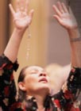

End of chapter activities
It is often difficult to define something which is familiar. If we were asked to define ‘liturgy’ we may not be able, even though we participate in liturgies on a regular basis. People have differing and sometimes conflicting views on what liturgy is. One of the difficulties in describing liturgy is that, like the church itself, liturgy is a living mystery: liturgy is always open to fresh insight and deeper understanding. The liturgy is always more than we can say and eludes precise description. There is, however, much that can be said about it to help us understand.
The liturgy is a continuing celebration of God’s ongoing presence in the world. The Second Vatican Council described the liturgy as ‘source and summit’ of Christian life. It is a pattern of initiative and response: God’s initiative and the Christian person’s response, which underlies all of the Christian life. The pattern of initiative and response is clearly evidenced in liturgy. God’s outreach is expressed in the readings from the Bible and the gift of God comes to the community through the sacraments. People respond to both reading and sacrament.
Liturgy has several defining characteristics:
- Liturgy is the public and official worship of the church; it is not just the Mass and the sacraments, but includes all the Liturgy of the Hours, rituals which are part of RCIA and Christian funerals, as well as rituals for the consecration of members of religious orders, and formal blessings.
- Liturgy is the action of the church offering worship to God where the baptised faithful are led by Christ.
- Liturgy is the action of the church offering worship to God where the baptised faithful are led by Christ.
Liturgical gestures and actions
Liturgies are rituals and therefore they are full of ritual gestures and actions. A gesture is movement of a part of the body, usually the hands or head to express a particular meaning. In prayer settings many gestures are used to assist the believer in praying.
Gestures of the priest
Gestures involve our bodies in prayer. In the Mass a variety of gestures are used by both the priest and the congregation. In a Mass, the gestures of the priest have particular meaning and significance.
Procession
The Mass usually opens and concludes with a procession of the priest, readers and altar servers. The opening procession which moves through the church towards the sanctuary reminds the people gathered that they are part of the priesthood of all believers as baptised people of God. Just prior to the gospel being proclaimed, during the acclamation, the Book of the Gospels is often taken in procession to the lectern or ambo. At the conclusion of Mass, the priest, readers and altar servers process away from the altar, through the congregation as the people sing the final hymn.
Bowing
Bowing is a sign of reverence. The Priest bows before the altar or genuflects before the Tabernacle as a sign of reverence acknowledging the presence of Christ. The priest bows at other times during the Mass: during the Creed when saying the statement “...conceived of the Holy Spirit, born of the Virgin Mary”; and while praying during the Preparation of Gifts.
It is often difficult to define something which is familiar. If we were asked to define ‘liturgy’ we may not be able, even though we participate in liturgies on a regular basis. People have differing and sometimes conflicting views on what liturgy is. One of the difficulties in describing liturgy is that, like the church itself, liturgy is a living mystery: liturgy is always open to fresh insight and deeper understanding. The liturgy is always more than we can say and eludes precise description. There is, however, much that can be said about it to help us understand.
The liturgy is a continuing celebration of God’s ongoing presence in the world. The Second Vatican Council described the liturgy as ‘source and summit’ of Christian life. It is a pattern of initiative and response: God’s initiative and the Christian person’s response, which underlies all of the Christian life. The pattern of initiative and response is clearly evidenced in liturgy. God’s outreach is expressed in the readings from the Bible and the gift of God comes to the community through the sacraments. People respond to both reading and sacrament.
ACTIVITY 7.1 | Liturgical actions
| Image | Describe gesture | Possible meaning conveyed by gesture |
|---|---|---|
 |
The Second Vatican Council described | Entry First Line 3 |
|  | Entry Line 2 | Entry Line 3 |
|
The Second Vatican Council described | Entry First Line 3 |
| Image | Describe gesture | Possible meaning conveyed by gesture |
|---|---|---|
|
The Second Vatican Council described | Entry First Line 3 |
| Entry Line 2 | Entry Line 3 | |
|
The Second Vatican Council described | Entry First Line 3 |
It is often difficult to define something which is familiar. If we were asked to define ‘liturgy’ we may not be able, even though we participate in liturgies on a regular basis. People have differing and sometimes conflicting views on what liturgy is. One of the difficulties in describing liturgy is that, like the church itself, liturgy is a living mystery: liturgy is always open to fresh insight and deeper understanding. The liturgy is always more than we can say and eludes precise description. There is, however, much that can be said about it to help us understand.
The liturgy is a continuing celebration of God’s ongoing presence in the world. The Second Vatican Council described the liturgy as ‘source and summit’ of Christian life. It is a pattern of initiative and response: God’s initiative and the Christian person’s response, which underlies all of the Christian life. The pattern of initiative and response is clearly evidenced in liturgy. God’s outreach is expressed in the readings from the Bible and the gift of God comes to the community through the sacraments. People respond to both reading and sacrament.